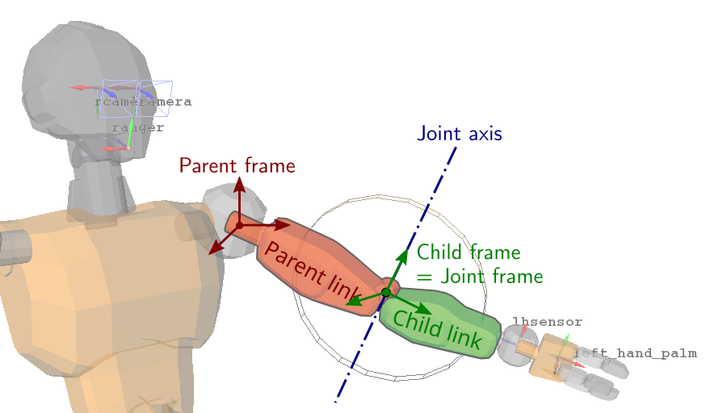
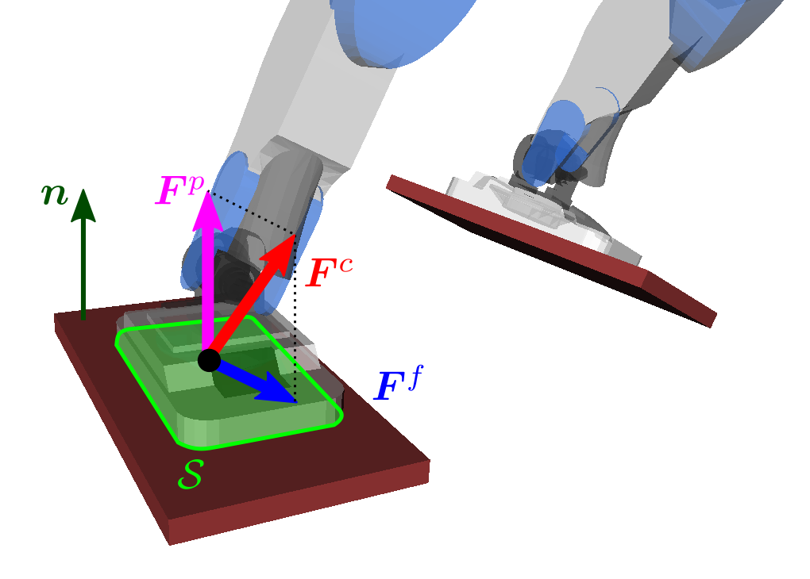

Notes in this section connect various aspects of robotics. They are loosely ordered from introductory concepts like kinematics to more advanced topics like locomotion control. Don't hesitate to chime in on the discussions at the bottom of each page if you have questions.
Kinematics ¶

- Differential inverse kinematics
- From spatial to body acceleration
- Jacobian of a kinematic task and derivatives on manifolds
- Kinematics jargon
- Kinematics of a symmetric leg
- Position and coordinate systems
- Revolute joints
- Screw axes
- Screw theory
- Spatial vector algebra cheat sheet
Dynamics ¶

- Constrained equations of motion
- Equations of motion
- Forward dynamics
- Knee torque of a lumped mass model
- Newton-Euler equations
- Point de non-basculement
- Principle of virtual work
- Recursive Newton-Euler algorithm
- Revolute joints
- Screw theory
- Zero-tilting moment point
Contact dynamics ¶

- Contact flexibility and force control
- Contact modes
- Contact stability
- Friction cones
- Point de non-basculement
- Twisting friction at surface contacts
- Wrench friction cones
- Zero-tilting moment point
- ZMP support area
Models ¶

- Contact flexibility and force control
- Linear inverted pendulum model
- Point mass model
- Variable-height inverted pendulum model
- Wheeled inverted pendulum model
Locomotion ¶

- Capture point
- Floating base estimation
- How do biped robots walk?
- Linear inverted pendulum model
- Open loop and closed loop model predictive control
- Prototyping a walking pattern generator
- Tuning the LIPM walking controller
- Variable-height inverted pendulum model
See also ¶
-
An Introduction to Lagrange Multipliers
How Lagrange multipliers arise from optimization constraints.
-
Integration Basics
How to integrate the equations of motion.
-
Some comments on the structure of the dynamics of articulated motion
My go-to writeup on the equations of motion.
-
The Principle of Least Action
A special lecture by Richard Feynman.